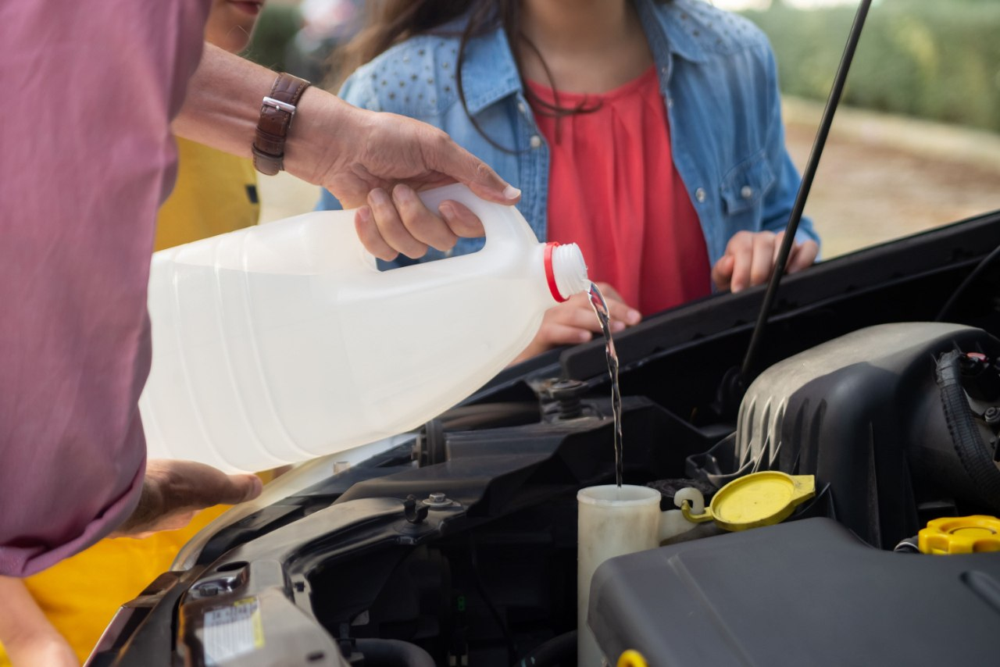

Home / Brakes
How Often to Change Brake Fluid and How to Check It
Quick answer
Brake fluid absorbs moisture over time, which lowers its boiling point and can make the pedal feel soft under heavy braking. Many manufacturers recommend changing it every two years. Check the level between MIN and MAX, treat dark brown fluid as old, and use only the grade printed on the reservoir cap.

Brake fluid is easy to ignore because it doesn't run out like fuel. But it ages, and old fluid doesn't brake as well as fresh fluid.
Why brake fluid needs changing
Most brake fluid (DOT 3, DOT 4 and DOT 5.1) absorbs moisture from the air over time. Water in the fluid lowers its boiling point. Under heavy braking, such as a long descent, the fluid can overheat and form vapour bubbles, which makes the pedal feel soft. Moisture can also corrode parts inside the brake system.
How often to change it
Many manufacturers recommend every two years, regardless of mileage. BMW's schedule is among those. Others say every three years or by distance. Your service schedule has the exact interval for your car.
How to check the level
- Park on level ground with the engine off.
- Open the bonnet and find the brake fluid reservoir, a translucent plastic tank near the driver's side of the engine bay.
- Read the level against the MIN and MAX marks on the side. You usually don't need to open it.
The level drops slowly as the pads wear, because the pistons move out. A sudden drop or a level below MIN could mean a leak, which needs urgent attention.
Safety note. Brake fluid damages paint and is harmful to skin and eyes. Wear gloves and eye protection, and wipe any spill off paintwork immediately.
What the colour tells you
- Clear to pale amber: fresh or in good shape.
- Dark brown: old and likely full of moisture. Time to change.
- Murky or with particles: change it and have the system inspected.
Colour alone isn't exact. Cheap test strips or a boiling point tester give a better idea of how much water is in the fluid.
Which fluid to use
Use what's printed on the reservoir cap or in your manual. DOT 3, DOT 4 and DOT 5.1 are glycol-based and mix with each other, but follow the grade your car calls for. DOT 5 is silicone-based and isn't compatible with the others, so don't mix them. Use a fresh, sealed bottle, because opened fluid absorbs moisture.
If you're replacing pads at the same time, How to Change Brake Pads Yourself shows where the fluid level matters when you push the piston back.
Changing it yourself
Bleeding a brake system is a doable job, but mistakes matter. Air in the lines, a fluid reservoir running dry or a missed bleed nipple can leave you with poor brakes. Many modern cars with ABS and electronic stability control also have recommended procedures. If you've never done it, consider having a workshop handle the first one and watch how it's done.
A soft pedal has several possible causes; see Spongy Brake Pedal: Causes and What to Check. If you spot fluid near a wheel, compare it with the colours in Fluid Leaking Under Your Car.
Signs of a problem
- A soft or sinking pedal
- A brake warning light on the dash
- Fluid dripping near a wheel
- A pedal that gets worse after repeated hard braking
Any of these means get the car checked before driving it further.
FAQ
How often should brake fluid be changed?
Commonly every two years, but follow your service schedule.
Can I just top up the brake fluid?
Topping up is fine for a slightly low level, but a falling level means worn pads or a leak. Find out which.
What happens if brake fluid is old?
It holds water, which lowers its boiling point and can cause a soft pedal after heavy braking. It can also corrode parts.
Can I mix DOT 3 and DOT 4?
They're glycol-based and mix, but use the grade your car calls for. Never mix DOT 5 (silicone) with the others.
This guide is general information, not professional advice. Check your own vehicle's manual for exact specs and read the disclaimer before starting any job.